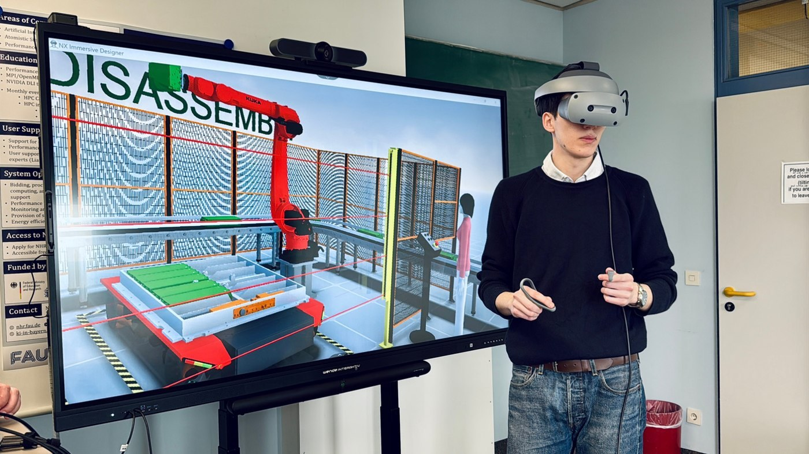

← Alle Projekte
 SONY
SONY
Immersive Design Challenge
SONYSiemens × Sony | 12/2024 – 04/2025 | Teamleiter
1. Platz unter 900 Teilnehmenden

Was?
- Die Immersive Design Challenge ist ein internationaler Ingenieurwettbewerb von Siemens Digital Industries Software in Zusammenarbeit mit Sony.
- Fördert nachhaltiges Design durch den Einsatz immersiver Technologien wie XR und digitaler Zwillinge für reale Ingenieursprobleme.
- Umfang: ca. 900 Studierende, über 230 Universitäten, 38 Länder.
Wie?
- Leitung des Teams NextCycle.
- Entwicklung von BatteryTwin-XR: ein in Siemens-Software integrierter digitaler Zwilling für einen nachhaltigen Lebenszyklus von E-Auto-Batterien.
- Konzeption eines XR-Frameworks mit dem Sony-XR-Headset zur Unterstützung von Entscheidungen zu Überwachung, Wiederverwendung und Recycling von Batterien.
- Fokus auf Kreislaufwirtschaft: effizienteres Recycling, weniger Batterieabfall.
Ergebnisse
- 1. Platz unter den internationalen Finalteams.
- Von Siemens und Sony für eine innovative, nachhaltige XR-Lösung ausgezeichnet.
- Preis: ein Sony-XR-Headset und eine einjährige NX-Immersive-Designer-Lizenz für Lehre und Forschung.
- Einladung zur Siemens Realize LIVE; Ausbau der Immersive-Design-Kompetenzen an der FAU.